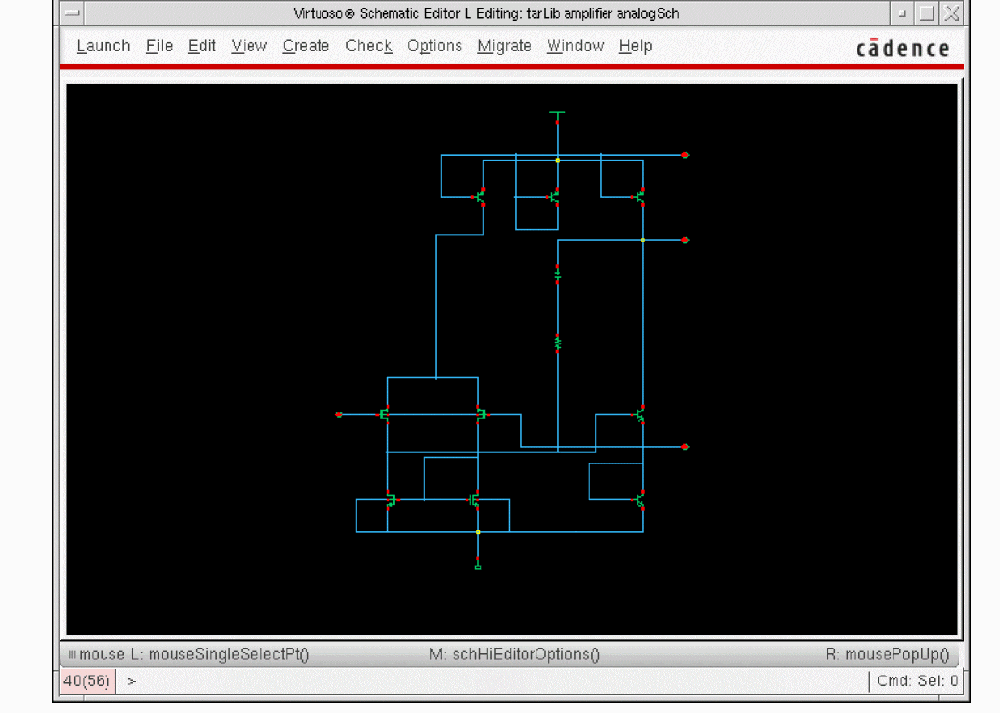

2
Working with Connectivity-to-Schematic
The Virtuoso Design Environment workbench enables you to access the Connectivity-to-Schematic tool using both, GUI and SKILL functions. This chapter explains the GUI of the Connectivity-to-Schematic tool. The chapter also explains how to generate digital and analog schematic views. In addition, the chapter describes environment variables and SKILL functions supported by the Connectivity-to-Schematic tool.
Introducing the User Interface
The user interface of Connectivity-to-Schematic consists of the following tabs:
In addition, the user interface contains the following buttons, which are common for all tabs:
- OK: Passes the information that you provide to generate a schematic to conn2sch executable and closes the user interface of Connectivity-to-Schematic.
- Cancel: Closes the user interface of Connectivity-to-Schematic.
- Defaults: Restores default settings on the tabs. If you change the default settings on any tab, the changes are retained during the workbench session, by default.
- Apply: Passes the information that you provide to generate a schematic to conn2sch executable. Unlike the OK button, the user interface of Connectivity-to-Schematic does not close when you click the Apply button.
- Help: Access help on how to use Connectivity-to-Schematic and get online support.
Connectivity-to-Schematic Options Tab
This tab contains options to specify source and target cellviews required to generate a schematic view. The following figure shows the Connectivity-to-Schematic Options tab:

Source Cellview
Contains fields to specify a source cellview, which you need to convert to a schematic view. A source cellview consists of an existing library, cell, and view. You can either type the library, cell, and view names in the Library Name, Cell Name, and the View Name fields or select these using the Browse button.
Reference Libraries
Specifies a list of libraries that contain the symbol views for the instances present in the source cellview. The analogLib, basic, and sample libraries are displayed as reference libraries, by default. If a master instance of all other instances in the source cellview is not of the dbcSchematicSymbol type, then a symbol from the reference libraries is used. If a symbol is not found in any of the reference libraries, then a new symbol view is created in the destination library and this is used as an instance master.
If you want to generate a multi-sheet schematic, you can specify a reference library containing the sheet border and the index sheet symbols, such as the US_8ths library.
Target Cellview
Contains fields to specify the destination library name, cell name, and view name where you need to generate the schematic view. You can either type the library, cell, and view names in the Library Name, Cell Name, and the View Name fields or select these using the Browse button.
If you do not specify the target library name or the cell name, the source library name or the source cell name is used by default. The target view name is schematic, by default. However, you can change the view name to any other view name.
Browse
Opens Library Browser to enable you to select the target library, cell, and view names. If the target cell and view do not exist, you can use the Browse button to select only the library name. To specify new target cell and view names, you need to type them in the Cell Name and View Name fields.
The Browser button is available for the source and target cellviews.
Overwrite Existing View
Overwrites the target cellview if it exists. If you do not select this option and a target cellview of the same name exists, then the Connectivity-to-Schematic tool will exit without creating the schematic.
Schematic Generation Options Tab
This tab contains options to manage the appearance of the schematic view, which Connectivity-to-Schematic generates. For example, you can specify if the schematic should be fully routed or extracted. The following figure shows the Schematic Generation Options tab:
t.Sheet Symbol
Specifies the symbol that controls the size and page orientation of the sheet on which the schematic is to be made. Valid entries are the names of customer-designed sheet symbols and sheet symbols offered by Virtuoso® Design Environment.
A selection of sample sheet symbols is shipped with Virtuoso Design Environment in the <install_dir>/tools/dfII/etc/cdslib/sheets/US_8ths library. These symbols include metric sheet symbols A0 through A4, and sheet symbols for the traditional A, A.book (vertical orientation), B, C, D, E, and F sizes.
The library containing the sheet symbol entered in this field must be in your cds.lib file for the Connectivity-to-Schematic tool to use the correct information.
If the Sheet Symbol is set to none, a single sheet schematic is generated. If a specific sheet symbol size is provided, and the schematic cannot fit on a single sheet, a multi-sheet schematic is generated. A multi-sheet schematic has one index sheet and many schematic sheets.
The cell name of the index sheet for the multi-sheet schematic has the same name as the target cell name. The schematic sheets are named as <target_cell_name>@sheet<nnn> where nnn is the sheet number. For example, if the target cell name is top, the index sheet is also named as top. If the top index sheet has three schematic sheets, these are named as top@sheet001, top@sheet002, and top@sheet003.
Maximum Number Of Rows
Specifies the maximum number of rows on each sheet. This option is used only on a multi-sheet schematic. The value must be an integer from 1 to 1024. The maximum number of rows that can fit on a sheet is 1024.
The number of rows that are displayed on a sheet might be less than the specified number of rows depending on the size of the instance symbols and the size of the sheet.
Maximum Number Of Columns
Specifies the maximum number of columns on each sheet. This option is used only on a multi-sheet schematic. The value must be an integer from 1 to 1024. The maximum number of columns that can fit on a sheet is 1024.
The number of columns that are displayed on a sheet might be less than the specified number of columns depending on the size of the instance symbols and the size of the sheet.
Font Height
Controls the size of the font used for pin, wire, and instance labels. The value must be a real value between 0.0375 and 0.125. The wire and instance labels use the font size specified in Font Height. Pin labels are scaled down to 75 percent of the specified size.
Line To Line Spacing
Specifies the spacing in inches between nets flowing in a channel for each sheet. The spacing for net segments connected to instance pins depends on the pins placed on the symbols of the instances. Line To Line Spacing is used for all other net segments. The value must be a decimal number in the range of 0.19 to 0.5 inches.
Line To Component Spacing
Specifies the spacing in inches between a component and the nearest net flowing in a channel. The value must be a decimal number in the range of 0.19 to 0.5 inches.
Component Density
Controls the density of a schematic. The value must be an integer from 0 to 100, where 100 is the most dense and 0 is the least dense.
Pin Placement
Specifies the placement of pins on a symbol. Pin placement can be defined as any of the following two options:
- Left and Right Sides: Places pins on the left and right sides of a symbol, usually with input pins on the left and inout pins and output pins on the right.
- All Sides: Places pins on any side of a symbol.
-
Pin Placement File: Places pins on specific sides of modules as defined in a file called pin placement file. When you select this option, you must provide the path of the pin placement file in the Pin Placement File Name field.
Pins and their placement on modules are defined in the pin placement file in the following format:pin_placement := {moduleName, {left|right|top|bottom},comma-separated-pin-name-list}
For example:pin_placement := inv, left,a,b,c,d
pin_placement := inv, top,e,f
pin_placement := test4, bottom, c, d
pin_placement := test4, left, e
The first line in the example given above specifies that moduleinvhas pinsa,b,c, anddoriented on the left side.
Default value:Left and Right Sides
Text to Symbol Generator Files
Specifies a space-separated list of tsg files to be used by Connectivity-to-Schematic to generate symbols in the target library. Connectivity-to-Schematic internally runs the Text-to-Symbol generator, a tool that reads the symbol descriptions given in the tsg files to create symbol views.
For more details about the Text-to-Symbol generator and the tsg files, see
Full Place and Route
Specifies whether all the connections should be made by wiring. The following figure shows a fully routed schematic.
Turn this option off to generate a schematic in which the nets are not explicitly connected. In such a schematic the nets are not wired and the connectivity is indicated by name. This type of schematic is useful for importing large designs where the primary focus is in creating a netlist and simulation and not viewing the design. In addition, generating such a schematic is much faster than generating a completely routed schematic as a significant amount of run-time is spent during routing. The following figure shows a schematic in which the nets are not explicitly routed:
Generate Square Schematics
Specifies whether to square the schematic. Turn this option off if you do not want the rows and columns of devices modified to make a rectangular schematic into a square one.
Minimize Crossovers
Specifies whether to minimize crossover of nets. Turn this option on to minimize crossovers of nets.
Optimize Wire Label Locations
Specifies whether to override default label placement. Turn this option on to override default label placement, which keeps overlap of segments or labels to a minimum, in favor of fast placement, which places labels of segments at the midpoint without checking for minimum overlap.
Extract Schematics
Specifies whether to extract the target cellview in order to report errors and warnings in the schematic. An extracted schematic has blinking markers for the errors or warnings in the schematic view.
Verbose
Specifies whether to print detailed status messages while the schematic is being partitioned and routed. Turn this option on to print detailed messages.
Analog Schematic Generation
Specifies whether to generate an analog schematic using analog placement and routing engine. The options on the Analog Schematic Options tab become active only when you turn this option on. The Connectivity-to-Schematic tool generates digital schematic by default.
Fast Schematic Generation
The options in this group box enable fast generation of the schematic when the design being imported contains a large number of instances or ports.
The following table lists the fields in the Fast Schematic Generation group box, with their default values and environment variables.
| Field | Default Value | Environment Variable |
For details on the environment variables, see “Setting Environment Variables”.
To use the fast schematic generation feature, select the Generate Fast Schematic check box and specify the number of instances and ports in their respective fields. If the number of instances or ports in the design exceeds the specified number, the tool generates a schematic in which the instances are placed in a two-dimensional array without any routing, and the connectivity of the nets is indicated by names.
-
To enable the fast schematic generation feature without considering the number of instances or ports in the designs being imported, select Generate Fast Schematic and type
0in the Instances Greater Than and Ports Greater Than fields. - If you disable the fast schematic generation feature, and the design has a large number of instances and ports, schematic generation can take significant time to place and route the instances and nets.
Cellview to Connect Floating Ports/Nets
The fields in this group box connect the floating nets ports in the schematic with a cellview when the source cellview is a netlist view.
The fields specify the library name, cell name, and view name of the cellview that you want to use for connecting to the floating ports and floating nets. For example, to use the noconn cellview to connect to the floating ports and nets, you can specify the library as basic, cell name as noconn and view names as symbol. You can either type the library, cell, and view names in the Library Name, Cell Name, and the View Name fields or select these using the Browse button.
Alternatively, you can use the command-line option noconn_symbol or the .cdsenv variable noconn_symbol.
Analog Schematic Options Tab
This tab contains options to generate an analog schematic from an imported netlist. The information provided on this tab is passed to the conn2sch executable only if the Analog Schematic Generation option, on the Schematic Generation Options tab, is turned on. The following figure shows the Analog Schematic Options tab:
Cellview To Be Used For Power Cell
Contains options to specify a cellview that you need to use as a master of a power cell instance. Select the values provided in the Library Name, Cell Name, and the View Name cyclic fields to specify a cellview. Alternatively, you can type the library name, cell name, and view name in these fields. The default values are:
If multiple instances of a power cellview exist, only a single instance is created while importing a design to ensure that the final schematic contains only one symbol instance of a power cell.
Cellview To Be Used For Ground Cell
Contains options to specify a cellview that you need to use as a master of a ground cell instance. Select the values provided in the Library Name, Cell Name, and the View Name cyclic fields to define a cellview. Alternatively, you can type the library name, cell name, and view name in these fields. The default values are:
If multiple instances of a ground cellview exist, only single instance is created while importing a design to ensure that the final schematic contains only one symbol instance of a ground cell.
Global Net
Contains options to specify power net and ground net names. Power and ground nets are used to vertically align the instances. Instances connected to a power net are placed towards top of a schematic and instances connected to a ground net are placed towards bottom of a schematic.
You can specify the power net and ground net names in the Power Net Name and the Ground Net Name fields. Default values for these fields are:
Generating Schematics
Guidelines to Create and Edit Symbols
You must follow certain guidelines to create and edit symbols, which a schematic uses. If you do not follow these guidelines, the Connectivity-to-Schematic tool might not generate the schematic, or might generate a schematic, which is incorrect or off-grid. Also, nets might overlap symbols and symbol labels might overlap nets or net labels. The guidelines to create and edit symbols are:
-
To prevent extraction errors, make sure the snap spacing is 10 database units (dbu) or greater.
When creating schematics, the Connectivity-to-Schematic tool takes the snap spacing for schematics and symbols from the property,xSnapSpacingon the viewType, schematic in the target library. Ideally, snap spacing should be an even number of dbu. -
To ensure that schematics are on-grid, check that the snap spacing of the target library and that of the symbols in the reference libraries are the same.
If this is not possible, make sure the symbols in the reference libraries have a snap spacing that is a multiple of the snap spacing of the target library. -
To ensure that schematics are correct, check that the outer edges of all pin figures on each side of the symbol are on the same line (pin figures cannot be recessed from other pin figures) and are abutting the bounding box.
The bounding box is the smallest box enclosing all pin figures and all shapes on the Device-Drawing Layer Purpose pair. Also, make sure that no symbol figures are beyond the pin figures on either side of the symbol shape. You should also specify a unique pin access direction on the pins of the symbol; otherwise, a net might be connected to a pin from a wrong direction. -
Snap spacing is set lower than 10 dbu in the
schematicview type in the target library. -
Snap spacing in the symbol is not a multiple of the snap spacing in the target.
- To ensure that schematics are on-grid, make sure all marked lengths are a multiple of the snap space, including the pin-to-pin distances and the origin-to-pin distance.
The Connectivity-to-Schematic tool places the origin of the Composer Symbol on the snap grid. If all marked lengths are not multiples of the snap space, the generated schematic will be off-grid. Usually this is not a problem because the Symbol Editor automatically imposes this restriction. Problems might occur only if the snap space of the symbol has been changed during or after editing the symbol.
Generating Digital Schematics
The following figure shows the netlist view of the eight_ip_cell cell existing in the sourceLib library:
To generate a digital schematic view from the netlist view:
- Click File, point to Import, and then click Netlist View to run the Connectivity-to-Schematic tool.
- Specify the names of a source library, source cell, and source view in the appropriate fields on Connectivity-to-Schematic Options tab.
-
Specify the names of target library, target cell, and target view in the appropriate fields on the Connectivity-to-Schematic Options tab.
If you do not specify the target library name, the source library is used as the target. Similarly, if you do not specify the target cell name, then the source cell name is used as the target cell name. - Click the Schematic Generation Options tab to modify schematic generation options.
- Click OK or Apply on the Connectivity-to-Schematic tab to generate a digital schematic.
-
Wait until Connectivity-to-Schematic displays a completion message as shown in the following figure:
The completion message specifies that a schematic is generated in the specified target library. -
Click Yes to view the log file. The following figure shows the log file contents:
-
Select File — Open to open the Open File dialog box as shown in the following figure:
Alternatively, you can open the schematic view from Library Manager. -
Select digital_sch from the View drop-down list box on the Open File dialog box. The schematic view generated by Connectivity-to-Schematic is displayed in the Virtuoso Schematic Editor L window.
The following figure shows the digital schematic view for theeight_ip_cellcell in thetargetliblibrary:
Generating Analog Schematics
The following figure shows the netlist view of the amplifier cell existing in the srcLib library:
To generate an analog schematic from the netlist view:
- Click File, point to Import, and then click Netlist View to run the Connectivity-to-Schematic tool.
- Specify the names of a source library, source cell, and source view in the appropriate fields on Connectivity-to-Schematic Options tab.
-
Specify the names of target library, target cell, and target view in the appropriate fields on the Connectivity-to-Schematic Options tab.
If you do not specify the target library name, the source library is used as the target. Similarly, if you do not specify the target cell name, then the source cell name is used as the target cell name. - Click the Schematic Generation Options tab to modify schematic generation options.
- Select the Analog Schematic Generation option to activate the options on the Analog Schematic Options tab.
- Click the Analog Schematic Options tab to modify analog schematic options.
- Click OK or Apply on the Connectivity-to-Schematic tab to generate an analog schematic
- Wait until Connectivity-to-Schematic displays the completion message that a schematic is generated in the specified target library.
- Click Yes on the Connectivity-to-Schematic message box to view the log file.
- Select File — Open to open the Open File dialog box.
-
Select
analogSchfrom the View drop-down list box on the Open File dialog box. The schematic view generated by Connectivity-to-Schematic is displayed in the Virtuoso Schematic Editor L window.
The following figure shows the analog schematic view of theamplifiercell in thetarLiblibrary:

Setting Environment Variables
Environment variables are the global values or settings that determine the default behavior of the Connectivity-to-Schematic tool (conn2sch). You can change the values of these variables to customize the operation and behavior of the tool. Environment variables are specified in the .cdsenv file, which can be accessed from the following path:
<inst_dir>/tools/dfII/etc/tools/conn2sch/.cdsenv
The following table shows the entries in the .cdsenv file and the default values of the variables. Notice that each entry in the .cdsenv file begins with the tool name, followed by the environment variable name, variable type, the value, and the range of the variable.
Using SKILL Functions
The Connectivity-to-Schematic tool provides various SKILL APIs for tasks such as the following:
- Generating a schematic view from an imported netlist view.
- Invoking the graphical user interface of the tool.
For details, see HDL Import and Netlist-to-Schematic Conversion SKILL Reference.
Return to top